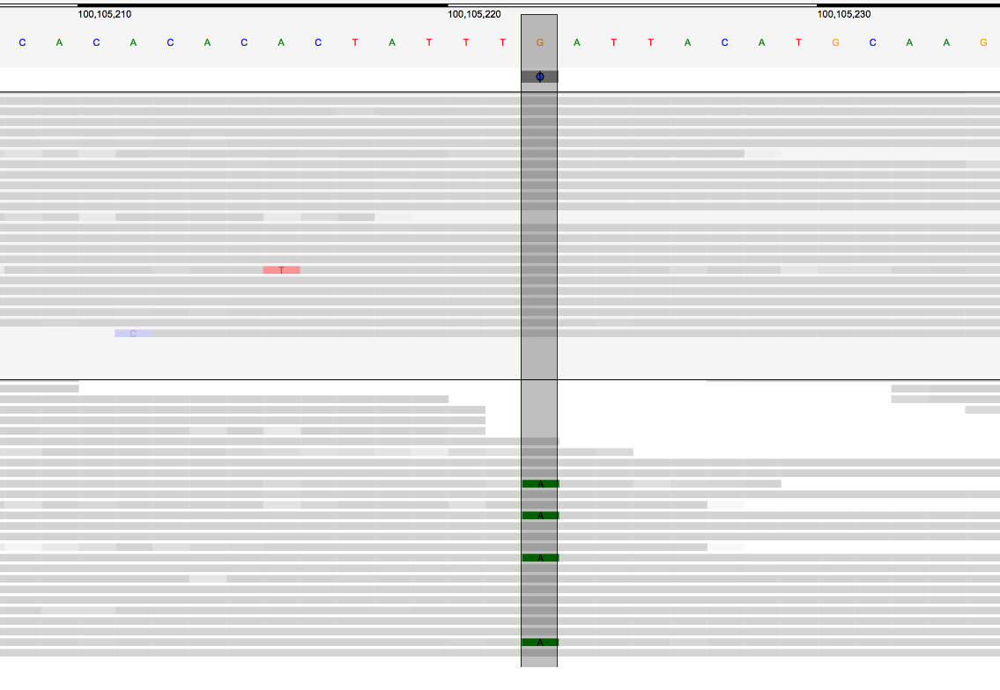
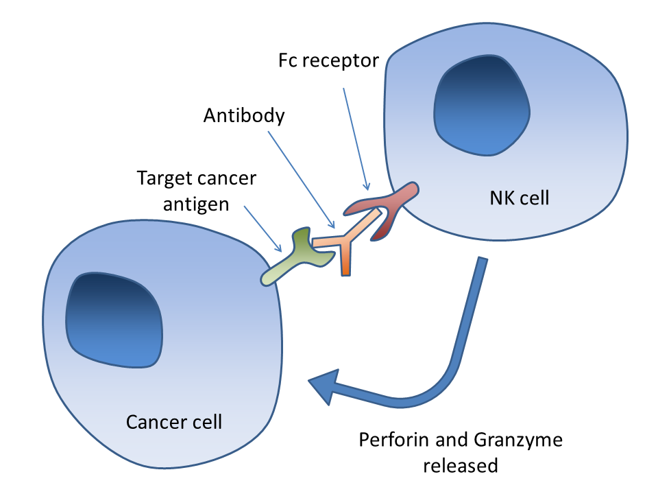
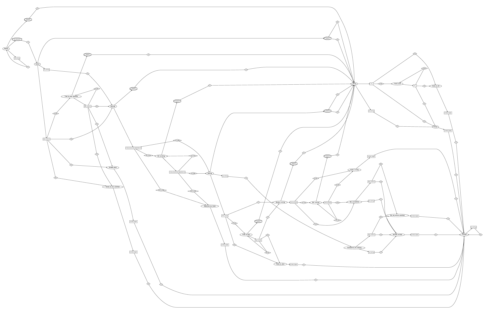

Ketrew
A Workflow Engine
For Big & Messy Pipelines
Sebastien Mondet,
Compose Conference,
Jan 31, 2015.
Mount Sinai
Mount Sinai
- Among
37_000employees … - We are a 10 person lab in the School of Medicine.
Hammer Lab
Within the Icahn Institute for Genomics and Multiscale Biology
Mission: Better software for biomedicine
- Infrastructure:
- Maintain a Hadoop Cluster
- Tools:
- Craft high-quality FOSS for common workloads in biomedicine
- Science:
- Use the tools – Do science
- Develop novel therapeutics or diagnostics
- Improve outcomes and reduce costs
Bioinformatics Workflows
Example: somatic variant calling
- Sequence DNA for a tumor and a normal sample
- Find differences: “variants”
- Example application: Cancer Immunotherapy
- Somatic variants → Mutated proteins → distinctive antigens
- ⇒ Use the mutated regions of cancer proteins to make a peptide vaccine
i.e. guide the immune system in the right direction.
A Variant
Immune System
Bioinformatics Workflows
Example: Broad Institute's recommendations:

Bioinformatics Vs Software Engineering
A gentle introduction to the world of bioinfomatics software:
First encounter with the most used sequence aligner.
$ bwa -h [main] unrecognized command '-h'$ bwa --help [main] unrecognized command '--help'$ bwa -help [main] unrecognized command '-help'$ bwa help [main] unrecognized command 'help'$ bwa WTF! [main] unrecognized command 'WTF!'$ bwa Program: bwa (alignment via Burrows-Wheeler transformation) Version: 0.7.10-r789 Contact: Heng Li <lh3@sanger.ac.uk> Usage: bwa <command> [options] Command: index index sequences in the FASTA format mem BWA-MEM algorithm fastmap identify super-maximal exact matches ...
Bioinformatics Vs Software Engineering
Don't assume anything:
$ samtools index some-non-existing-file.bam [E::hts_open] fail to open file 'some-non-existing-file.bam'$ echo $? 0
Bioinformatics Vs Software Engineering
GATK partying like it's Windows 3.1:
##### ERROR MESSAGE: Couldn't read file
some_bam.target-intervals
because The interval file
some_bam.target-intervals
does not have one of the supported extensions (.bed, .list, .picard,
.interval_list, or .intervals). Please rename your file with the
appropriate extension. If
some_bam.target-intervals
is NOT supposed to be a file, please move or rename the file at location
some_bam.target-intervalsThis variant caller did something:
$ ./somaticsniper -h
./somaticsniper: invalid option -- 'h'
Unrecognizd option '-?'.- and don't get me started on Casava and its HTML “report” …
- or The Broad Institute's licensing …
Workflow Engines
Need to run 100s of tools, make parameters vary, over 1000s of samples, and
- add new tools
- adapt to new versions
- install software
- assume anything can randomly fail for obscure reasons
- optimize infrastructure usage
- deal with other adverse conditions (firewalls, VPNs, etc.)
- make reproducible research easier
Workflow Engines
A lot of them.
- often specific to a platform (e.g. Hadoop)
- not flexible
- lots of assumptions (networks, file-systems, can
make, etc.) - custom DSLs (yet another half-baked Turing-complete language)
- no fault tolerance
- buggy
Ketrew
So, yes, a new one, with these goals:
- Embedded DSL → highly hackable workflows
- Multiple backends → extensible
- Correct & fault-tolerant
- Standalone or client-server → work around sys-admins
with a sane implementation language: OCaml.
Why OCaml?
Software kills people.
We are pathetically 40 years behind on the safety/security front.
Why OCaml?
OCaml is:
- mature and evolving
→ code from the 90's + GADTs + subtyping + modules - rich and strict type system
→ express safety/security lightweight theorems - focus on readability
→ ask Yaron / Jane St - fast, portable, hackable
- future-friendly: start replacing some modules with Coq-extracted code
Ketrew
“Keep Track of Experimental Workflows”
github.com/hammerlab/ketrew
- EDSL/library to write programs that build workflows/pipelines
- A separate application, The “Engine”, orchestrates those workflows
Features
In 0.0.0:
- EDSL trying to be usable by OCaml beginners
- Client-server (HTTPS + JSON) and standalone modes
- Implementation of the engine (naive/slow but hackable/testable)
- A command-line client
- LSF, PBS,
nohup/setsid, or “Python” backends
+ plugin infrastructure to add backends
Coming next:
- Faster + cleaner engine
- (G)UI, a bit surprised by our own usage
(3000+ targets for 1 workflow)
Using It
Tested with bioinformatics pipelines, but also running backups, building documentation …
let run_command_with_lsf ~queue cmd = let open Ketrew.EDSL in let host = Host.parse "ssh://MyLSFCluster/pathto/ketrew-playground/?shell=bash"_uri in target "run_command_with_lsf" ~make:(lsf (Program.sh cmd) ~queue ~wall_limit:"1:30" ~processors:(`Min_max (1,1)) ~host)
let fail_because_of_condition ~host = let open Ketrew.EDSL in let make_target ~cmd = target ~make:(daemonize ~using:`Python_daemon Program.(sh cmd) ~host) in let target_with_condition = let impossible_file = file ~host "/some-inexistent-file" in make_target "Failing-target" ~cmd:"ls /tmp" ~done_when:impossible_file#exists in make_target "Won't-run because of failed dependency" ~cmd:"ls /tmp" ~dependencies:[ target_with_condition ]
Some Cool Stuff
State machine encoded with sub-typing
Structural Sub-Typing of States
module Starting : sig type t = [ | `Starting of Building.t History.t | `Tried_to_start of (t History.t * Run_bookkeeping.t) ] ... module Running : sig type t = [ | `Started_running of (Starting.t History.t * Run_bookkeeping.t) | `Still_running of (t History.t * Run_bookkeeping.t) ] ... module Killable_state : sig type t = [ | `Passive of Log.t | `Active of (Passive.t History.t * ...) | `Building of Active.t History.t | `Still_building of Building.t History.t | `Starting of (Building.t) History.t ... ] ...
⇒ Pure/total/exceptionless
val transition: state -> (do_some_io * some_io_result update_state)
GADTs, Hammers, and Nails
We have open-sourced
hammerlab/biokepi.
type _ t = | Fastq_gz: File.t -> fastq_gz t | Fastq: File.t -> fastq t | Paired_end_sample: string * fastq t * fastq t -> fastq_sample t | Single_end_sample: string * fastq t -> fastq_sample t | Gunzip_concat: fastq_gz t list -> fastq t | Concat_text: fastq t list -> fastq t | Bwa: bwa_params * fastq_sample t -> bam t | Gatk_indel_realigner: bam t -> bam t | Picard_mark_duplicates: bam t -> bam t | Gatk_bqsr: bam t -> bam t | Bam_pair: bam t * bam t -> bam_pair t | Mutect: bam_pair t -> vcf t | Somaticsniper: [ `S of float ] * [ `T of float ] * bam_pair t -> vcf t | Varscan: [`Adjust_mapq of int option] * bam_pair t -> vcf t
Typed bioinformatics pipelines!
Compiling Pipelines
let pipeline_example ~normal_fastqs ~tumor_fastqs ~dataset = let open Biokepi_pipeline.Construct in let normal = input_fastq ~dataset normal_fastqs in let tumor = input_fastq ~dataset tumor_fastqs in let bam_pair ?gap_open_penalty ?gap_extension_penalty () = let normal = bwa ?gap_open_penalty ?gap_extension_penalty normal |> gatk_indel_realigner in let tumor = bwa ?gap_open_penalty ?gap_extension_penalty tumor |> gatk_indel_realigner in pair ~normal ~tumor in let bam_pairs = [ bam_pair (); bam_pair ~gap_open_penalty:10 ~gap_extension_penalty:7 (); ] in let vcfs = List.concat_map bam_pairs ~f:(fun bam_pair -> [ mutect bam_pair; somaticsniper bam_pair; somaticsniper ~prior_probability:0.001 ~theta:0.95 bam_pair; varscan bam_pair;]) in vcfs
Compiled to more than 3000 Ketrew targets, JSON-pipeline, …
Running Pipelnies
Runs for days, then posts to
hammerlab/cycledash
The End
Thanks! Questions?
- Happy to hear about Ketrew being useful in any other setting!
- Contribute/complain: https://github.com/hammerlab/ketrew/issues
Will tweet link to the slides: @smondet.
Next Lucrative Jacket gig: March 18th, 8pm, at the Trash Bar in Brooklyn.
Error Monad With Polymorphic Variants
utop> IO.read_file;; - : string -> (string, [> `IO of [> `Read_file_exn of string * exn ] ]) Deferred_result.t utop> IO.write_file;; - : string -> content:string -> (unit, [> `IO of [> `Write_file_exn of string * exn ] ]) Deferred_result.t utop> System.with_timeout;; - : float -> f:(unit -> ('a, [> `System of [> `With_timeout of float ] * [> `Exn of exn ] | `Timeout of float ] as 'error) Deferred_result.t) -> ('a, 'error) Deferred_result.t
Polymorphic Variants Are Awesome
utop> let dumb_copy_with_timeout ~seconds ~src ~dest = System.with_timeout seconds ~f:(fun () -> IO.read_file src >>= fun content -> IO.write_file dest ~content );; val dumb_copy_with_timeout : seconds:float -> src:string -> dest:string -> (unit, [> `IO of [> `Read_file_exn of string * exn | `Write_file_exn of string * exn ] | `System of [> `With_timeout of float ] * [> `Exn of exn ] | `Timeout of float ])
Some OCaml Lessons Learned
Pain:
- Oasis, OCamlbuild
- Camlp4
- Huge Jane-Street-style libraries
Pleasure:
- Pure OCaml, Functors, GADTs
- Ocsigen (minimizing the Camlp4 part)
- Lwt with Error Monad based on Polymorphic Variants
- Bünzli-style small libraries
- Code Generators (ATDgen)
- Opam
Why Not F#
Big Windows-oriented runtime but most importantly: null pointers
PS: funny that F# is at Compose but not Scala …
Why Not Haskell
Haskell:
- lazy by default → difficult to reason about performance/execution
- purity does not bring much to safety
people useunsafePerformIOanyways + less “hackable” - type-classes in practice:
used 95% of the time to make the code as unreadable as possible - more unreadability: need to know every possible GHC extension
(there is even dynamic typing in there!?) - indentation-based grammar makes code hard to read (blocs > 7 lines)
- does not have (AFAIK) any good subtyping mechanism
Want More GATK?
It uploads reports to AWS without your consent.
-et,--phone_home Run reporting mode (NO_ET|AWS| STDOUT)
-K,--gatk_key GATK key file required to run with -et NO_ET Thanks
Done with Omd and MPP generating an HTML + Reveal.js presentation.
Meta
- Compiled on
Sat, 31 Jan 2015 11:22:12 -0500 - Git:
451763c-dirty